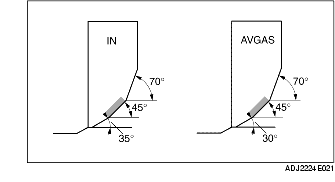

KONTROLL/REPARATION AV VENTILSÄTE
B3E011010280E01
1. Mät bredden på ventilens tätningsyta och ventilsäte med hjälp av överlappningspasta (rött bly).
-
• Om specifikationerna inte uppfylls kan ventilsätet behöva slipas med hjälp av en 45° ventilsätesfräs. Även ventilens tätningsyta kan slipas vid behov.

-
Ventilsätets standardkontaktbredd
-
0,8-1,4 mm {0,032-0,055 tum}
2. Kontrollera att ventilsätets kontaktyta befinner sig i mitten av ventilsätesytan.
-
• Om ventilsätet befinner sig för högt, måste ventilsätet justeras med en 70° (Insug) 70° (Avgas) fräs, samt en 45° fräs.
-
• Om ventilsätet befinner sig för lågt, måste ventilsätet justeras med en 35° (Insug) 30° (Avgas) fräs, samt en 45° fräs.
3. Kontrollera djupslitage i ventilsätet. Mät den utstickande längden (L) på ventilspindeln genom att använda en ventil av standardlängd.
-
• Om måttet är för stort, måste topplocket bytas.
-
Ventilsätets standarddjupslitage
-
39,29 mm {1,5468 tum}